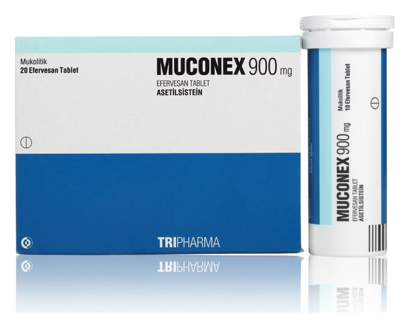

Muconex 900 mg Efervesan Tablet, 20 Adet

Ne için kullanılır
KT · Bölüm 1Beyaz renkte yuvarlak efervesan tabletler şeklindedir. Karton kutuda, moleküler sieve ve silika jel içeren kapaklı polipropilen tüpte 20 efervesan tablet içermektedir.
MUCONEX suda tamamen eritildikten sonra içilerek kullanılan bir ilaçtır.
MUCONEX etkin madde olarak asetilsistein içerir. Asetilsistein, bir aminoasit olan sistein türevi bir ajandır. Balgam söktürücü etkiye sahiptir.
MUCONEX yoğun kıvamlı balgamın atılması, azaltılması, yoğunluğunun düzenlenmesi ekspektorasyonun (Balgamın atılabilmesi) kolaylaştırılması gereken durumlarda, bronkopulmoner (Bronş ve akciğer) hastalıklarda, bronşiyal sekresyon (Solunum yolu salgısı) bozukluklarının tedavisinde kullanılan mukolitik (Balgamı, mukusu parçalayan) bir ilaçtır. Ayrıca yüksek doz parasetamol alımına bağlı olarak ortaya çıkan karaciğer yetmezliğinin önlenmesinde kullanılır.
MUCONEX soğuk algınlığı ve soluk yollarının iltihaplanması (Bronşit) durumunda balgam oluşmasını azaltır. Oluşan balgamları sulandırarak, öksürükle atılmasını kolaylaştırır.